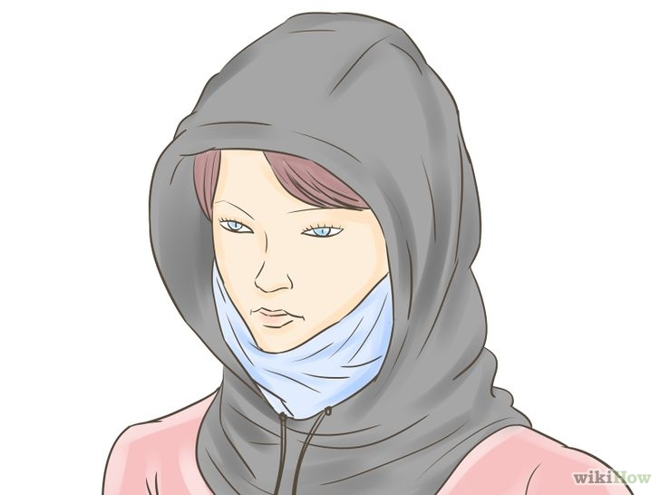

Every year in Chicago, when winter begins to take grasp, you'll hear endless complaints about how miserably cold it is. Most of these complainers have recently moved to Chicago in the last few years and have been spared the nagging from their parents on how to stay warm, a familiar monologue to many native Chicagoans. It is miserably cold, even in comparison to areas much farther north. This is because of the "lake effect" and wind chill. It is a different kind of cold than one would experience in Canada or Alaska, and often more dangerous.
This article will not emphasize the solution that many people choose, which is staying indoors as much as possible. Instead, it will give you some very detailed tips on how to dress so that you can spend the day outside and stay comfortable.
Step 1
Choose layers. Layers always beat insulation. You may have a $400 down parka that made you sweat on the coldest day in New York, but it will be almost useless when confronted with the sustained winds that are common in Chicago. The cold air will immediately chill the t-shirt you have under it, and subsequently turn your wardrobe into a beer cooler. When the mean temperature (not the windchill) drops below 20ºF, there should be no time when you're wearing less than two layers. This includes gloves and even socks if you haven't invested in real snow boots or thermal boots for high altitude climbing.
Step 2
Cover your head. Cover your head. Don't bother with hats and scarves unless you already own a warm aviator hat that buckles around your chin. Instead, buy a decent balaclava that covers your neck and shoulders and that can be adjusted to cover your entire lower face or stay rested under your chin. Your second layer will be the hood of your jacket.
Step 3
Protect your upper body. You don't need to invest in a $700 arctic jacket. In fact, many of the down parkas available will make you sweat and will fail to protect you from wind gusts; being covered in sweat can be worse than wearing nothing at all. Instead, aim for a medium insulated parka that is rated between -10ºF and 0ºF. A nylon exterior is a plus, as it will repel any snow or freezing rain from dampening the insulation. A good example is the Knox Armory N-3B Parka, which can be found for under $100. Under the parka you'll want to wear a thin but heavy sweatshirt. The tops of winter track suits work perfectly for this, and also give you the benefit of a zipper so you dress or undress both layers in one suave motion. Under the sweatshirt is not your bare skin of course, but what you plan on wearing indoors. This provides three layers that will ensure your body won't even be fazed by the merciless cold outside. Be sure to tuck the inner layer inside your pants so that wind doesn't blow cold air up your back.
Step 4
Protect your lower body. Most people get lazy about this, but jeans simply do not cut it. On a normal winter day, throw on some thin thermal underwear that reaches your ankles under your pants. It makes a world of difference. When temperatures drop below zero, you'll either want some thicker thermals or to invest in some snow pants to wear over your indoor pants. Do not wear sweatpants or dress pants as your outer layer. If you have a long commute to work, you'll be much happier putting 30 seconds aside to change into them when you arrive.
Step 5
Cover your hands and feet.Thin fabric gloves seem useless in Chicago, but they're not. They make a perfect secondary layer to wear under thicker, waterproof gloves. If it isn't snowing and you're wearing a normal pair of shoes, double up on socks. When putting them on, pull them above the ankles of your thermal underwear so your skin isn't exposed while walking. If there is more than two inches of snow, forget about your shoes. Not only will you ruin them, but you'll be putting yourself at risk of frostbite as it tends to clench around your ankles and ice up. You'll want to invest in a pair of waterproof winter boots that go at least halfway to your knees. This is tricky because there are a lot of winter boots for sale at department stores that are little more than moisture sponges attached to your feet. Instead, try looking in sports and outdoors stores for boots with certified temperature ratings and waterproof materials. Kamik is a company that makes great winter boots that cost about as much as your average inept department store boot.